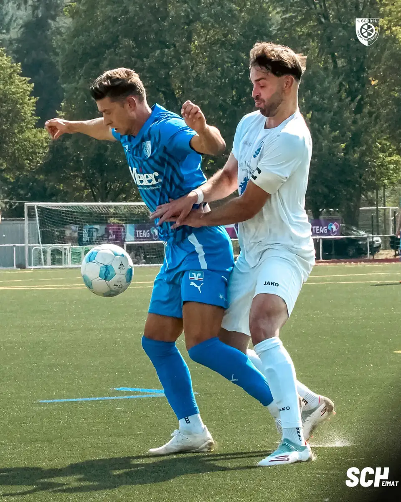
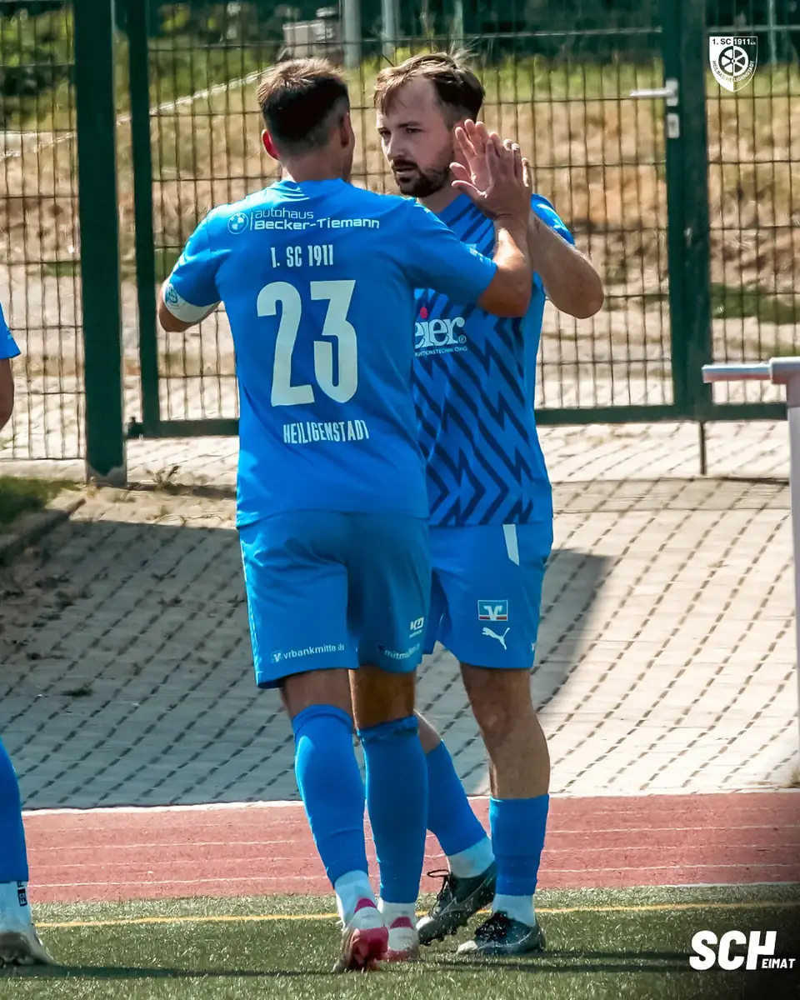
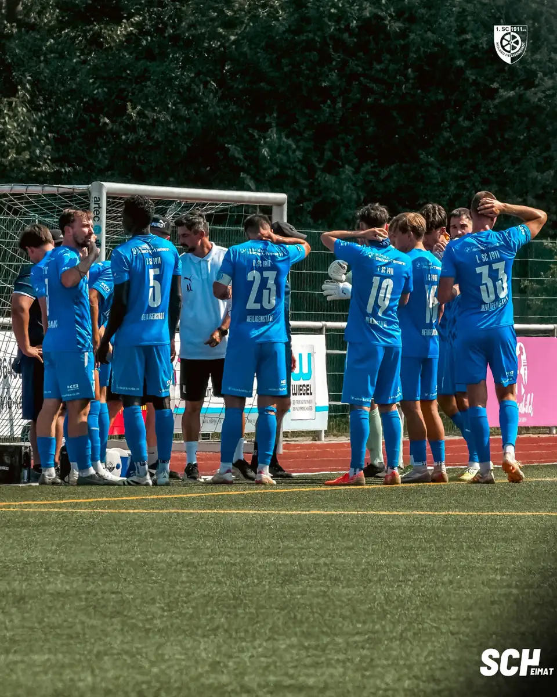
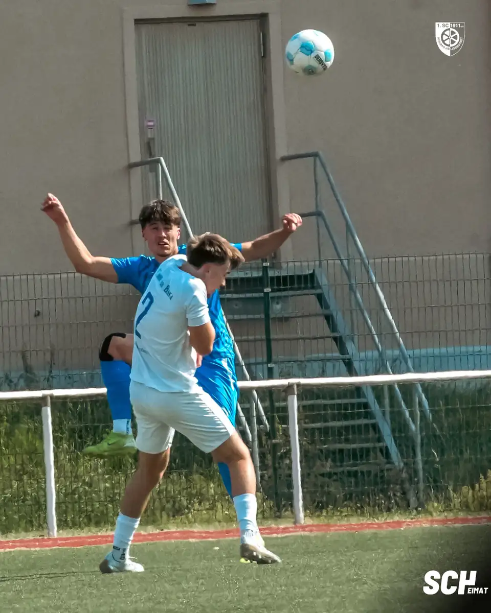
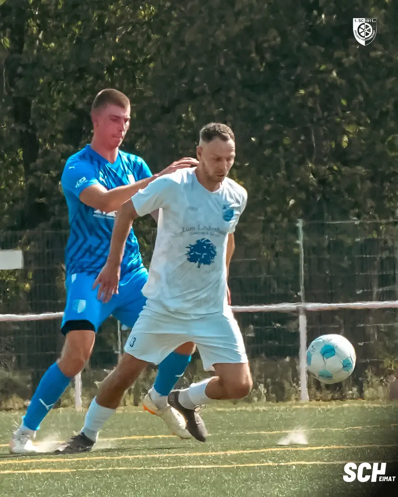
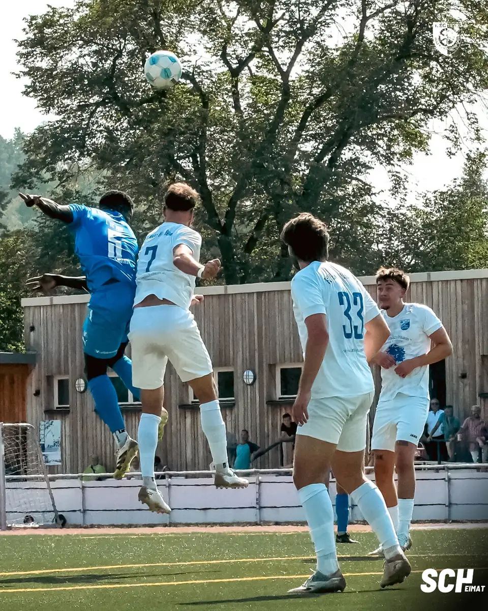
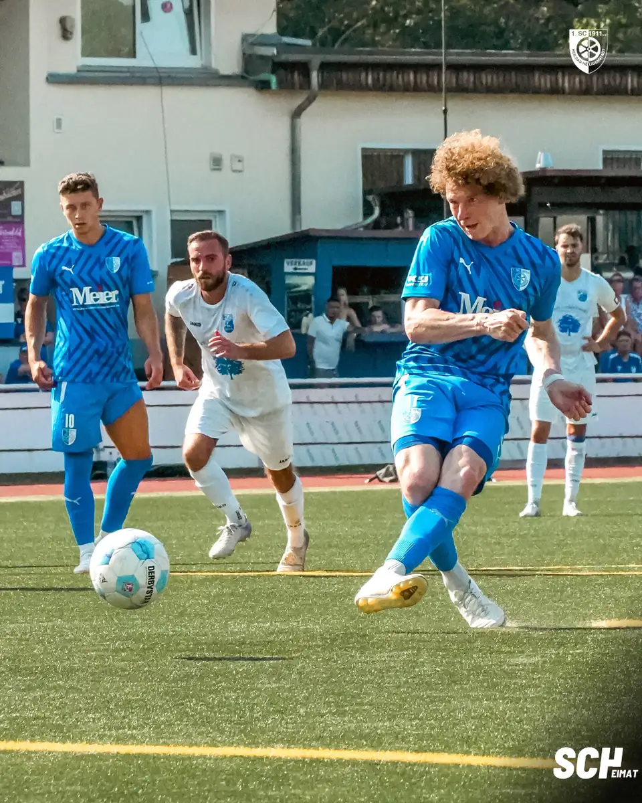
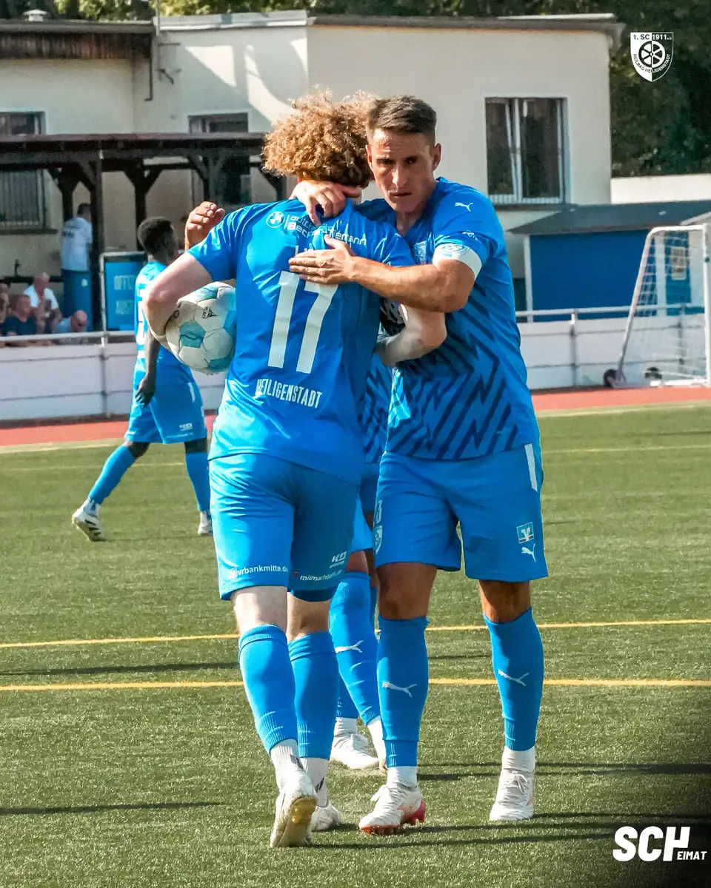
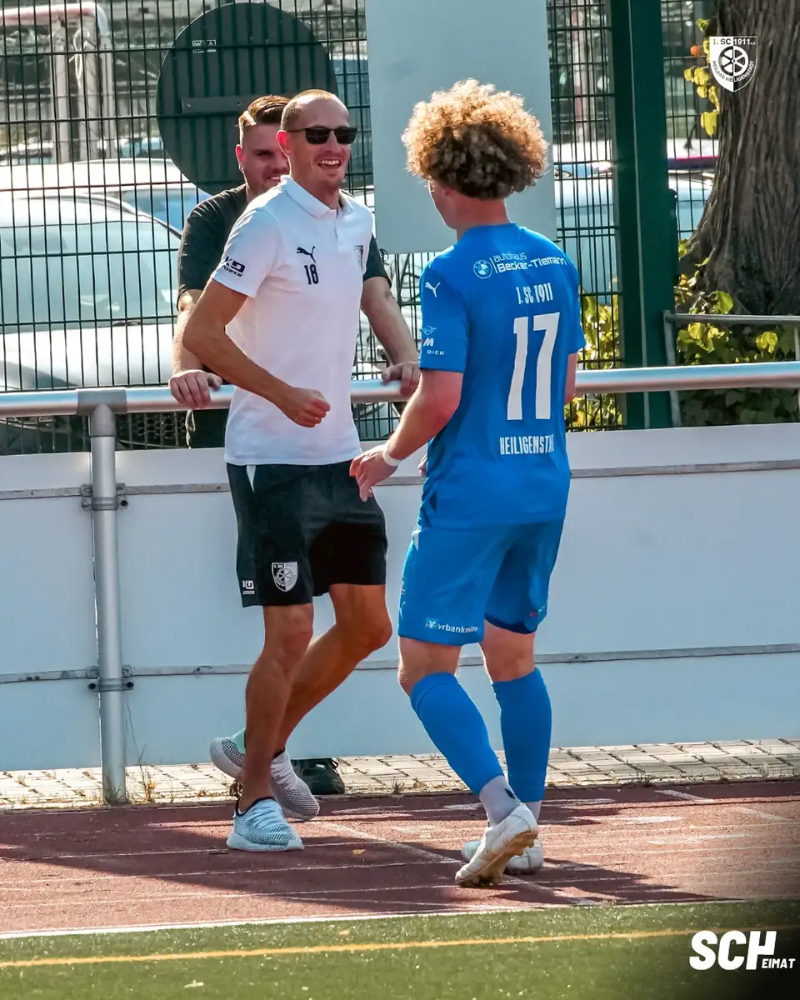
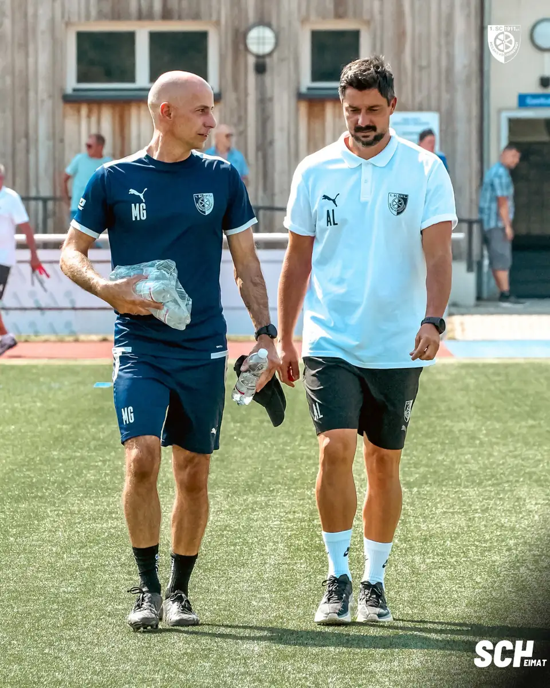

Starke Reaktion in Bad Berka: SCH feiert ersten Saisonsieg
Der SCH hat sich mit einer starken Reaktion zurückgemeldet. Beim bis dahin verlustpunktfreien FC Einheit Bad Berka setzte sich die Ludwig-Elf am Samstagnachmittag verdient mit 3:1 (1:1) durch und feierte damit den ersten Sieg der neuen Verbandsliga-Saison. Maciej Wolanski brachte den SCH früh in Führung, nach dem zwischenzeitlichen Ausgleich sorgte Adrian Wilhelm mit einem Doppelpack in der zweiten Halbzeit für die Entscheidung. Vor allem die Art und Weise machte diesen Auswärtssieg wertvoll. Bei Temperaturen weit über 30 Grad, die beiden Mannschaften im Laufe der Partie zunehmend anzumerken waren, hatte die Ludwig-Elf das Spiel über weite Strecken unter Kontrolle, erspielte sich zahlreiche Möglichkeiten und ließ sich auch vom zwischenzeitlichen 1:1 nicht aus der Ruhe bringen.
Von Beginn an voll im Spiel
Die Ludwig-Elf war vom Anpfiff weg hellwach. Gerade einmal fünf Minuten waren gespielt, da hätte der SCH eigentlich schon mit zwei Toren führen müssen. Zunächst bot sich Robin Vogt eine große Gelegenheit, kurz darauf hatte auch Maciej Wolanski die frühe Führung auf dem Fuß. Beide Möglichkeiten blieben zunächst ungenutzt. Trotzdem war sofort zu erkennen, in welche Richtung der SCH dieses Spiel lenken wollte. Der SCH war präsent, suchte konsequent den Weg nach vorne und setzte die Gastgeber früh unter Druck. In der 10. Minute belohnte sich die Mannschaft schließlich für diesen starken Beginn. Wolanski nutzte die nächste Gelegenheit und brachte den SCH verdient mit 1:0 in Führung. Auch danach blieb die Ludwig-Elf die spielbestimmende Mannschaft. Bad Berka war mit zwei Siegen in die Saison gestartet und hatte dabei offensiv für reichlich Aufsehen gesorgt. Davon ließ sich der SCH jedoch nicht beeindrucken. Die Mannschaft blieb aktiv und hatte die Partie weitgehend unter Kontrolle.
Der Ausgleich bringt den SCH nicht aus der Ruhe
Umso ärgerlicher war der Ausgleich in der 29. Minute. Denis Jäpel, der bereits an den ersten beiden Spieltagen seine Torgefahr unter Beweis gestellt hatte, traf für die Gastgeber zum 1:1.
Ein Gegentor, das zu diesem Zeitpunkt durchaus wehtat. Vor allem deshalb, weil sich der SCH für seinen Aufwand und die guten Möglichkeiten bis dahin eigentlich deutlicher hätte belohnen müssen. Entscheidend war jedoch die Reaktion der Mannschaft. der SCH verlor nach dem Ausgleich weder die Ordnung noch den Zugriff auf die Partie. Stattdessen arbeitete die Ludwig-Elf weiter, blieb geduldig und suchte weiterhin den Weg nach vorne. So ging es mit dem 1:1 in die Halbzeit. Ein Ergebnis, mit dem man angesichts der eigenen Möglichkeiten nicht vollständig zufrieden sein konnte. Gleichzeitig war klar: Wenn die Mannschaft diesen Auftritt auch nach der Pause fortsetzt und vor dem gegnerischen Tor konsequenter wird, ist an diesem Nachmittag mehr möglich.
Chancen sind da – nur das zweite Tor fehlt
Zur zweiten Halbzeit reagierte Trainer Alexander Ludwig auch personell. Adrian Wilhelm und Martin Fiedler kamen für Robin Vogt und Fabio Dornieden in die Partie. Am grundsätzlichen Bild änderte sich wenig. Der SCH blieb dran und erspielte sich weitere gute Möglichkeiten. Ole Hoch hatte die Chance auf die erneute Führung, Martin Fiedler scheiterte am Pfosten und auch Jagar Jargees Ali bot sich eine große Gelegenheit. Das 2:1 wollte zunächst einfach nicht fallen. Die Möglichkeiten waren da, der Aufwand stimmte und der SCH hatte weiterhin viel Kontrolle über die Begegnung. Nur die letzte Konsequenz vor dem Tor fehlte. Doch anders als noch eine Woche zuvor gegen Saalfeld sollte sich der Aufwand diesmal auszahlen.
Wilhelm bringt den SCH auf die Siegerstraße
In der 72. Minute wurde Maciej Wolanski im Strafraum gefoult. Adrian Wilhelm übernahm die Verantwortung – und behielt die Nerven. Der zur Pause eingewechselte Offensivspieler verwandelte zum 2:1 und sorgte damit für die längst ersehnte erneute Führung. Nun waren die Gastgeber gefordert. Bad Berka musste mehr riskieren und versuchte noch einmal, in die Partie zurückzukommen. Die Ludwig-Elf hielt dagegen. Nach zwei Spielen ohne Sieg war zu spüren, wie sehr der SCH diese drei Punkte mit nach Heiligenstadt nehmen wollte. Weil der Vorsprung zunächst nur ein Tor betrug, blieb die Begegnung bis tief in die Nachspielzeit offen. Die endgültige Entscheidung fiel erst in der 90.+9 Minute. Wieder war es Adrian Wilhelm. Mit seinem zweiten Treffer des Tages machte der Joker den Deckel drauf und sorgte mit dem 3:1 für die Entscheidung. Kurz darauf war Schluss – und der erste Saisonsieg perfekt.
Eine geschlossene Mannschaftsleistung
Nach dem Abpfiff war die Erleichterung entsprechend groß. Die Mannschaft hatte sich diesen Erfolg über die gesamte Spielzeit erarbeitet und vor allem die richtige Antwort auf die Niederlage der Vorwoche gegeben. Natürlich bleibt auch die Erkenntnis, dass sich der SCH für seine Möglichkeiten früher hätte belohnen müssen. Gerade in der Anfangsphase und auch nach dem Seitenwechsel waren genügend Chancen vorhanden, um die Partie eher zu entscheiden. Doch an diesem Nachmittag überwog etwas anderes: Die Mannschaft ließ sich nicht aus der Ruhe bringen. Nicht von den vergebenen Chancen zu Beginn, nicht vom zwischenzeitlichen Ausgleich und auch nicht von den weiteren ausgelassenen Möglichkeiten in der zweiten Halbzeit. Der SCH blieb geduldig, arbeitete weiter und belohnte sich am Ende für eine geschlossene Mannschaftsleistung.
Passend dazu fiel auch das Fazit von Trainer Alexander Ludwig aus:
„Wir haben heute als Mannschaft zusammengearbeitet und gemeinsam gefightet. Jeder war für den anderen da. Diesen Erfolg haben wir uns gemeinsam verdient.“
102 Zuschauer sahen am Ende einen verdienten 3:1-Auswärtssieg des SCH. Drei Punkte, die nach den ersten beiden Saisonspielen guttun – und ein Auftritt, auf dem die Mannschaft in den kommenden Wochen aufbauen kann.
Der Blick geht Richtung Landespokal
Viel Zeit zum Feiern bleibt allerdings nicht. Bereits am kommenden Freitag wartet die nächste Aufgabe auf den SCH. Dann geht es in der ersten Runde des Thüringer Landespokals zur SpVgg Siebleben 06. Anstoß ist um 18:30 Uhr. Nach dem ersten Saisonsieg nimmt die Ludwig-Elf aus Bad Berka nicht nur drei Punkte, sondern auch neues Selbstvertrauen mit nach Heiligenstadt. Nun gilt es, an diese Leistung anzuknüpfen und den Schwung mit in den Pokalabend zu nehmen.
Spieldaten
FC Einheit Bad Berka – 1. SC 1911 Heiligenstadt 1:3 (1:1)
FC Einheit Bad Berka
Scheeder – Schneider – Möller – Jäpel – Jordan – Schuchardt (75. Schönemann) – Bartholmeß (55. Hupach) – Schaft – Grzega – Wagner (89. Lubrich) – Müller
SC Heiligenstadt
Stankovic – Wolanski (90. Lerch) – Abdoul Aziz – Aschoff – Jeschke – Hoch – Vogt (46. Wilhelm) – Michalek – Dornieden (46. Fiedler (81. Jargees Ali)) – Schnellhardt – Voilenko
Schiedsrichter
Weltzien
Zuschauer
102
Tore
0:1 Wolanski (10.), 1:1 Jäpel (29.), 1:2 Wilhelm (72.FE), 1:3 Wilhelm (90.+9)









